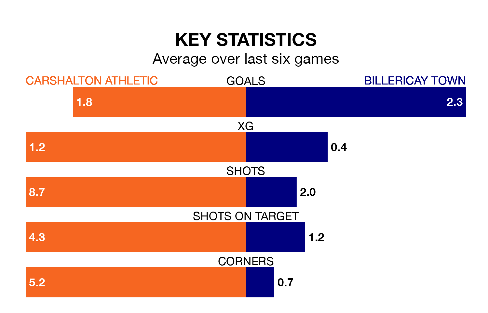

Billericay Town visit Carshalton Athletic at the War Memorial Sports Ground on Saturday on the back of four consecutive wins in the Isthmian Premier Division.
Billericay have picked up 12 points from their last six games, and they face a Carshalton side who drew their last match, and have collected 10 points from the last possible 18.
With 72 goals in 40 games so far this season, Carshalton are scoring more than average in the league with 1.8 goals per game. And they are conceding fewer than average, letting in 54 goals at a rate of 1.4 per game.
Billericay are also above average scorers, with 1.8 goals per game, compared to a league average of 1.6. They have conceded 1.2 goals per game.
Town are fifth in the table after 40 games, of which they have won 21 and drawn four, earning 67 points.
Athletic are two places behind the visitors in seventh, with 17 wins and 11 draws putting them on 62 points.
In the last three years, Carshalton and Billericay have played each other on three occasions. They won one each, and they drew once.
Their last meeting was on November 28, when Billericay won 2-0 at home.
Carshalton's last match was on April 13, a 3-3 draw against Bognor Regis Town.
Billericay beat Cheshunt 2-1 last time out, also on April 13.
Updated: 11:31 (UTC), 15/04/24